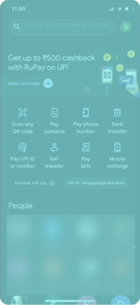
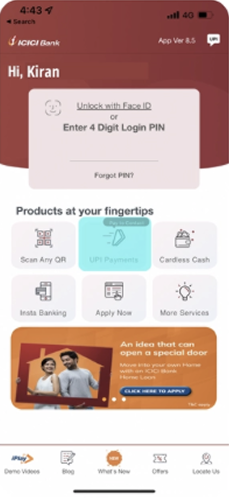
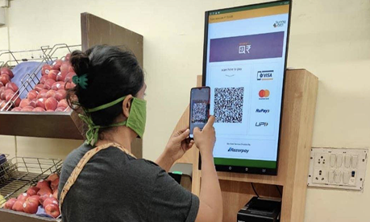
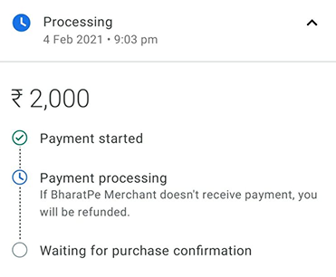
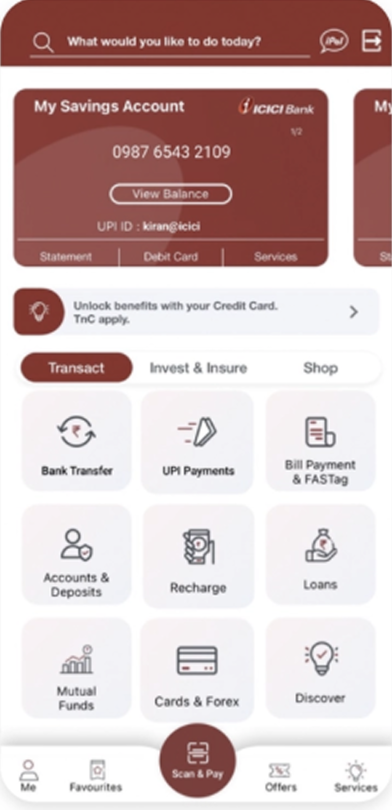
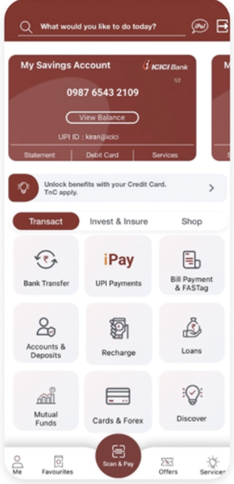
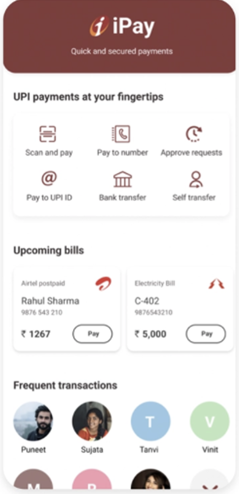

UPI already had its winners.
By 2022, three apps owned most of UPI. ICICI’s own customers were no exception: they opened the bank app for everything except paying.
They still used the app for other banking. Just not to pay.
Why do our own customers pay with someone else’s app?
Four challenges for the handbook to answer.
No first-mover advantage
How does ICICI stand out when everyone already has a UPI app they like?
Reliability
What would make ICICI feel more reliable than the UPI app people already trust?
What to test
Which scenarios would surface the real problems, not just the obvious ones?
Where next
What should ICICI design once the research is done?
Start broad, then narrow down.
We ran the research as a funnel: wide conversations first, then the specific payments where things went wrong.
- 01Research protocol
Planned the funnel and prototyped five real payment flows to test.
- 02Primary research
24 users across 5 tier-1 cities in India.
- 03Synthesis
Patterns pulled from every interview.
- 04Handbook
Findings and design directions for ICICI.
Five everyday payments. No hints.
We prototyped five real UPI tasks in iMobile Pay and watched people try them. Even the simplest one tripped everyone up.
Where people got stuck, task by task.
No first-mover advantage
Everyone already does UPI.
ICICI arrived late. To stand out, it had to compete on branding, marketing and offers.

“We do UPI.”
Google Pay

“We also do UPI.”
ICICI Bank
Context decides the app
Where you’re standing decides which app you open.
Big payments at home went through the banking app. Small payments, wherever people were, went to a UPI app.
Security, in public
Nobody opens their bank app in a crowd.

They can see my balance also, so I don’t open the app in public.User interview
I won’t open my banking app around many people. They will see my password and snatch my phone.User interview

And when a payment gets stuck, the bank gets blamed.
Labels
Labels that sound alike slow everyone down.
“Send money”, “BHIM UPI”, “Pay to contact”: people couldn’t tell which one would do what they wanted, so every payment took longer.
Ten things decide which UPI app people use.
Most are about brand and trust, and take time to move. Four are about the app itself, and ICICI could fix them right away.
- 01Social proof
- 02Visibility
- 03Marketing push
- 04Rewards
- 05UPI misconceptions
- 06Security concerns
- 07Discoverability
- 08Look & feel
- 09Labels
- 10Form design
Quick wins ICICI could act on immediately
Three ways forward, from safe to bold.
Each direction puts ICICI UPI in front of people, with a different amount of disruption to the bank.
-
Safe

Highlight UPI as an entry point
-
Moderately disruptive

Give UPI its own brand
-
Most disruptive

Build a separate app for UPI
This page is the short version.
The full handbook went much deeper. Some of what it covered:
- How people think about money, and size amounts in their head
- When they reach for UPI, and when for a card
- When they’d actually open a bank app instead of a UPI app
- Why UPI inside a bank app feels different from a standalone one